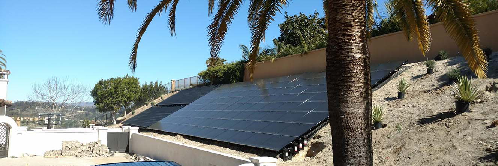

By generating your own electric power you will reduce your reliance on your local power utility. This will provide insulation from inflation and future utility rate hikes. You can save thousands of dollars annually for years to come.
A solar electric system for your home is typically an excellent investment that pays for itself and offers exceptional ROI (Return on investment).
Together, we can create an energy market where renewable energy offers the opportunity to save money AND leave a cleaner planet for future generations.
The renewable energy revolution has begun and as conscientious citizens we should allow no barriers to continued adoption of renewable energy with the goal of replacing carbon emitting fossil fuels entirely.

In California, a small 3.1 kilowatt (kW) system can add an average of $18,324 to the value of a medium-sized home, whereas installing 5kW of solar panels adds an average of $29,555 to the retail value of a medium-sized home.
As a future seller, can demand a higher asking price for your home, reduce exposure time on the market listings (sell your home (on average) 20x faster).
Net metering is where the amount of energy you buy in from the grid and the amount of excess solar energy you export to the grid are recorded separately and you are only billed for the net of these two numbers.
If you buy in 1000 kWh of electricity over a month at times when your solar is either not generating (night time or cloudy day), but you export 500 kWh of energy to the grid in the same month when your solar is producing more energy than your house is using, then you would be billed for only 500 kWh.

Ben Airth and Sachu Constantine of the Center for Sustainable Energy explain how solar plus storage can strengthen California’s electric grid — and the importance of good government policy in helping it do so.
When it comes to solar electric power, California has a good thing going – perhaps too good. Too much clean, affordable, abundant energy? It’s true because high levels of solar production from utility-scale facilities and widely distributed rooftop installations occur during daytime hours when demand may not be at its peak and grid-supplied electricity is plentiful.
Seasonally, and under certain conditions, this leads to an oversupply of energy on the grid and requires curtailment of generation resources, including wind and solar. We should see this as an opportunity to further reduce fossil fuel generation and to build a more robust, resilient and efficient grid.
When pairing solar with battery storage systems on a wide scale, Californians can not only save money, but also reduce strain on the grid and mitigate the Duck Curve. With nearly instantaneous response time, battery storage can smoothly ramp up and regulate supply, displacing peaker plants while simultaneously decreasing intermittency (power that is not continuously available). Energy storage also enhances resiliency, and defers utility transmission and distribution upgrades — all of which will save ratepayers in the long run. The potential social benefits are substantial, including cost savings, expanded consumer choice, a cleaner environment and robust clean-tech market and job growth.